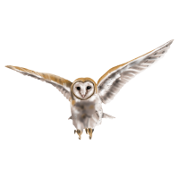

Legend of the Guardians: The Owls of Ga'hool
Soren is playing with his sister Eglantine. They are reenacting a war that the Guardians of Ga'Hoole won. Klaudd their brother comes into the scene and he isn't super enthused in them playing this game. They also have a snake as a caretaker, her name is Mrs. Plithiver. She takes Eg (Eglatine) to go rest after she throws up a pellet.
Noctus and Marella the owlets parents, are teaching them to glide on the branches. Soren is the first to get going and makes it to the branch, while Klaudd isn't as good at gliding at first. He is really mean towards Soren as well when he tries to help him.
Soren and Klaudd both end up on the ground without a way to get back up. They encounter some type of animal on the ground that almost attacks Klaudd but Soren scares it away. In swoops two adult owls that pick them up and start flying away from their tree. They have been owlknapped!

The young owls are brought to a place where they are forced to do labor, little did they know that everything in their life was about to change.